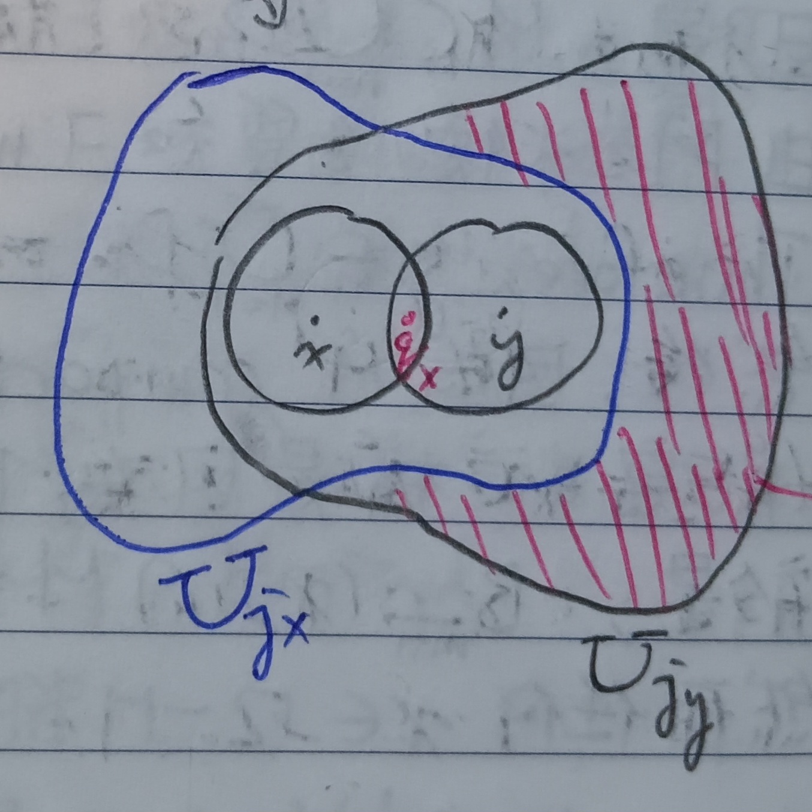

這份筆記是關於緊緻集的定義與性質。
收斂點列
定義 1：收斂點列 (Convergence Points Sequence)
給定\(\mathbb{R}^N\)上的歐幾里得距離\(\|\cdot\|\)，並給定點列\(\{X^j\}_{j=1}^\infty\subseteq\mathbb{R}^N\)。對於\(X\in\mathbb{R}^N\)，若對於所有\(\epsilon>0\)都存在\(N_0\in\mathbb{N}\)使得對於所有\(j>N_0\)都有\(\|X^j-X\|<\epsilon\)，則說點列\(\{X_j\}\)收斂至\(X\)，記做 \[ \lim_{j\to\infty}X^j=X \]
引理 2
給定\(\mathbb{R}^N\)上的歐幾里得距離\(\|\cdot\|\)，並給定點列\(\{X^j\}_{j=1}^\infty\subseteq\mathbb{R}^N\)，其中\(X^j\)的座標為 \[
X^j=\left(x_1^j,x_2^j,\cdots,x_N^j\right)
\] 考慮\(X=(x_1,x_2,\cdots,x_N)\)。則\(X^j\)收斂至\(X\)若且唯若對於所有\(k\)都有\(x_k^j\to
x_k\)。
證明：我們分兩個部分證明。
「\(\Rightarrow\)」：由於\(X^j\to X\)，故給定\(\epsilon>0\)，應存在\(N_0\in\mathbb{N}\)使得對於所有\(j>N_0\)有\(\|X^j-X\|<\epsilon\)。故 \[
|x_k^j-x_k|\leq\sqrt{\sum_{l=1}^N\left(x_l^j-x_l\right)^2}=\|X^j-X\|<\epsilon
\] 故當\(j\to\infty\)時有\(x_k^j\to x_k\)。
「\(\Leftarrow\)」：若對於所有\(k=1,2,\cdots,N\)有\(x_k^j\to x_k\)，則給定\(\epsilon>0\)，應存在\(N_k\in\mathbb{N}\)使得對於所有\(j>N_k\)有 \[
\left|x_k^j-x_k\right|<\frac{\epsilon}{N}
\] 令\(N_0=\max\{N_1,N_2,\cdots,N_N\}\)，則對於\(j>N_0\)有 \[
\|X^j-X\|=\sqrt{\sum_{k=1}^N\left(x_k^j-x_k\right)^2}<\sqrt{\sum_{k=1}^N\left(\frac{\epsilon}{N}\right)^2}=\frac{\epsilon}{\sqrt{N}}\leq\epsilon
\] 故當\(j\to\infty\)時有\(X^j\to X\)。QED
緊緻
定義 3：緊緻 (Compact)
給定集合\(M\)，若任意\(M\)的開覆蓋都有有限子覆蓋，則稱\(M\)為緊緻集。即若\(M\)為緊緻集，則對於任意一串滿足 \[ M\subseteq\bigcup_{j\in I}U_j \] 的開集集族\(\{U_j\}_{j\in I}\)，都存在有限集\(J\subseteq I\)使得 \[ M\subseteq\bigcup_{j\in J}U_j \]
性質 3-1
給定集合\(M\subseteq\Omega\)與其上的度量\(d\)，若\(M\)是緊緻集，則\(M\)必是閉集。
證明：給定集合\(M\)與宇集\(\Omega\)，若\(M\)緊緻，則給定\(x\in\Omega/M\)，令 \[ D_n=\left\{y\in\Omega:d(y,x)>\frac{1}{n}\right\} \] 很容易可以知道\(D_n\)是開集。我們希望說明 \[ M\subseteq\bigcup_{n=1}^\infty D_n \] 對於任意\(y\in M\)，由於\(x\notin M\)，我們有\(d(x,y)>0\)。由阿基米德性質(這裡的性質22)可知存在\(m\in\mathbb{N}\)使得 \[ 0<\frac{1}{m}<d(x,y) \] 故可知\(y\in D_m\)，於是有 \[ y\in\bigcup_{n=1}^\infty D_n \] 這對於任意\(y\in M\)都成立，故 \[ M\subseteq\bigcup_{n=1}^\infty D_n \] 接著，因為\(M\)是緊緻集且又有\(D_1\subseteq D_2\subseteq D_3\subseteq\cdots\)，應存在某個\(m\in\mathbb{N}\)使得 \[ M\subseteq\bigcup_{n=1}^m D_n \] 於是有\(B_{1/(m+1)}(x)\cap M=\varnothing\)，即\(B_{1/(m+1)}(x)\subseteq\Omega/M\)。然而任意的\(x\in\Omega/M\)都可以找到這樣的\(m\)，故\(\Omega/M\)是開集，即\(M\)是閉集。QED
性質 3-2
緊緻集的任意閉子集都是緊緻的。
證明：給定宇集\(\Omega\)中的緊緻集\(M\)，並給定其閉子集\(A\)。令\(\{U_j\}_{j\in I}\)是\(A\)的一個開覆蓋，即\(\{U_j\}\)是一堆開集且 \[ A=\bigcup_{j\in I}U_j \] 由於\(A\)是閉集，故\(\Omega/A\)是開集。而 \[ M\subseteq\Omega=A\cup(\Omega/A)=\left(\bigcup_{j\in I}U_j\right)\cup(\Omega/A) \] 上式的最右邊是\(M\)的開覆蓋，而由於\(M\)是緊緻集，故存在有限集\(J\subseteq I\)使得 \[ M\subseteq\left(\bigcup_{j\in J}U_j\right)\cup(\Omega/A) \] 又\(A\subseteq M\)，故\(\bigcup\limits_{j\in J}U_j\)是\(A\)的有限子覆蓋。這對任意的開覆蓋\(\{U_j\}_{j\in I}\)都成立，故\(A\)是緊緻集。QED
定義 4：有界 (Bounded)
給定集合\(K\)，若存在\(R>0\)滿足\(K\subseteq B_R(0)\)，則稱\(K\)是有界集。
定理 5
給定有界閉集\(M\subseteq\mathbb{R}^N\)，並給定一串開集\(\{U_j\}_{j\in I}\)滿足\(M\subseteq\bigcup\limits_{j\in
I}U_j\)，則存在可數集\(J\subseteq
I\)使得\(M\subseteq\bigcup\limits_{j\in
J}U_j\)。
證明：給定\(x\in M\)，則必存在\(j_x\in I\)使得\(x\in U_{j_x}\)。由於\(U_{j_x}\)是開集，故存在\(r_{j_x}\)使得\(B_{j_x}\subseteq U_{j_x}\)。可以假設\(r_{j_x}<1\)。而有 \[ B_{\frac{r_{j_x}}{20}}(x)\subseteq B_{r_{j_x}}(x)\subseteq U_{j_x} \] 則應存在\(q_x\in\mathbb{Q}^N\)使得\(q_x\in B_{r_{j_x}/20}(x)\)。我們可以記 \[ U_{j_x}=U_{q_x} \] 於是有 \[ M=\bigcup_{x\in M}\{x\}\subseteq\bigcup_{x\in M}U_{j_x}=\bigcup_{q_x\in M\cap\mathbb{Q}^N}U_{q_x} \] 這樣看似是找到可數集\(J=M\cap\mathbb{Q}^N\)了，但這是有問題的。若有\(x\notin y\)使得\(q_x=q_y\)，則\(U_{j_x}\)和\(U_{j_y}\)可能都會被標記為\(U_{q_x}\)。從下圖1來看，這樣會導致紅色斜線的部分被丟掉。
對於\(q_x=q_y\)的\(x\neq y\)，底下簡記\(r_{j_x}=r_x\)，\(r_{j_y}=r_y\)，有 \[ \begin{aligned} |y-q_y|&<\frac{r_y}{20}\\ |x-q_x|&<\frac{r_x}{20} \end{aligned} \] 故 \[ \begin{aligned} |x-y|&=|x-q_x+q_x-y|\\ &=|x-q_x+q_y-y|\;\;(q_x=q_y)\\ &\leq|x-q_x|+|y-q_y|\\ &<\frac{r_x}{20}+\frac{r_y}{20}\\ &\leq\frac{2}{20}\max\{r_x,r_y\} \end{aligned} \] 假設\(r_y\geq r_x\)，則\(|x-y|\leq\frac{2}{20}r_y\)，故有 \[ x\in B_{\frac{3}{20}r_y}(y)\subseteq B_{r_y}(y)\subseteq U_{j_y} \] 依循這個道理，固定\(x\)和\(q_x\)。